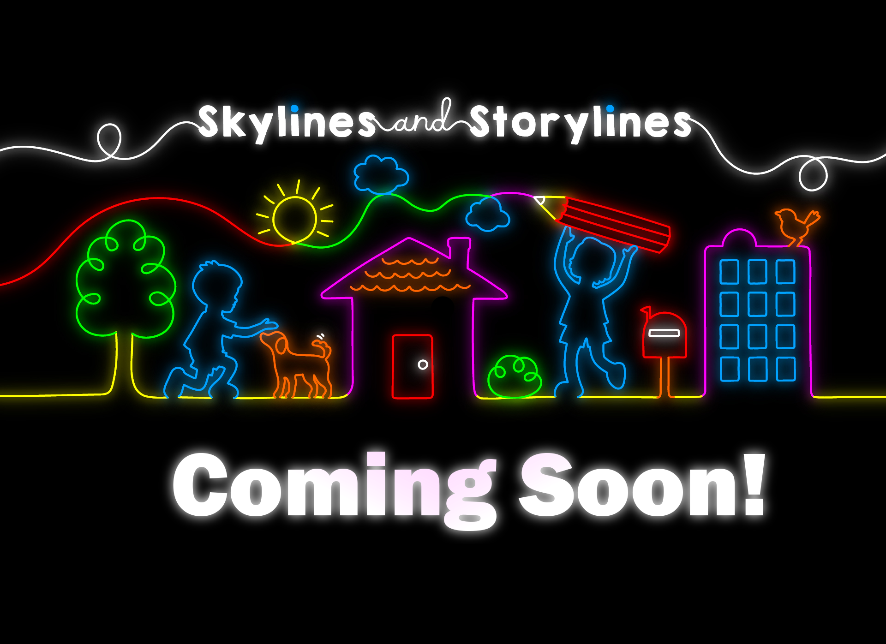

<!DOCTYPE html>
<html lang="">

<head>
  <meta charset="utf-8">
  <link rel="stylesheet" type="text/css" href="style.css">
  <link rel="stylesheet" href="https://use.typekit.net/epn7pmd.css">
  <meta name="viewport" content=" initial-scale=1.0">
    <!-- <meta name=”viewport” content=”width=device-width, initial-scale=1.0, maximum-scale=1.0, user-scalable=no” /> -->
    <script src="https://kit.fontawesome.com/eec66458b0.js" crossorigin="anonymous"></script>
    <title>Skylines and Storylines 0.5</title>
    <style>
      body {
        padding: 0;
        margin: 0;
      }
      </style>
  <script src="./lib/p5.min.js"></script>
  <script src="https://cdn.jsdelivr.net/npm/p5@1.1.9/lib/p5.js"></script>
  <script src="https://cdnjs.cloudflare.com/ajax/libs/tone/14.7.68/Tone.js" integrity="sha512-eBjUIAF/NN5kcGlFXz5n9UMAv+LKYFqtGnqHu83qQCXRJaL6iSsjFeOdft9AK9lD/9meTkj/5ctn6DGV5rz6Pg==" crossorigin="anonymous"></script>
  <script src="utils.js"></script>
  <script src="sketch.js"></script>
  <!-- <script src="./lib/Tone.js"></script> -->

</head>

<body>
  <main>
    <!--  -->
  </main>
  <div class="ui ui-top">
    <a href="http://playableweb.com" alt="back to web">
      
    </a>

    <div>
    </div>

    <a href="https://www.playablestreets.com/skylines" alt="do it yourself">
      
    </a>
  </div>

  <div class="ui">
    <div></div>
    <div class="nav">
      <!-- <div class="button previous" id="button-prev"> -->
        <!-- <i class="fas fa-chevron-left"></i> -->
      <!-- </div> -->

      <!-- <div class="info tk-jumble" id="info"></div> -->

      <!-- <div class="button next" id="button-next"> -->
        <!-- <i class="fas fa-chevron-right"></i> -->
      <!-- </div> -->
    </div>
    <div></div>
  </div>

</body>
</html>